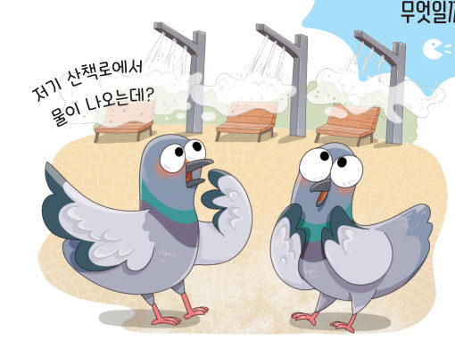
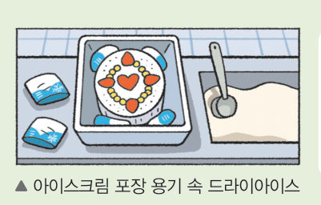
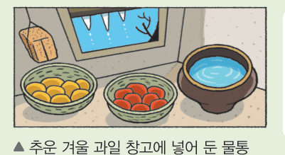
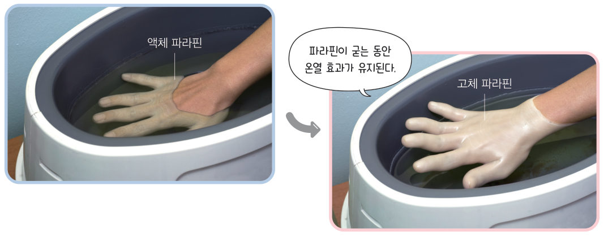
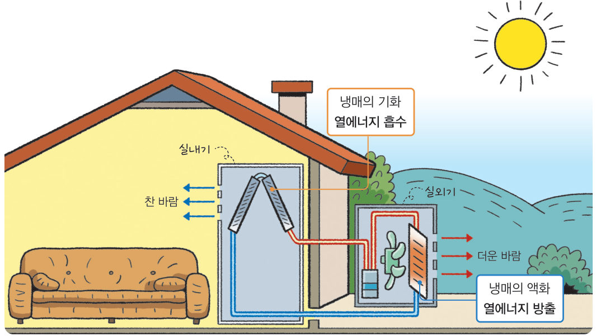
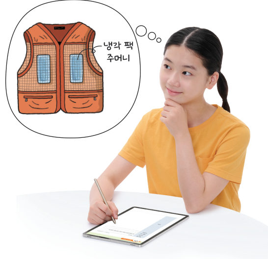
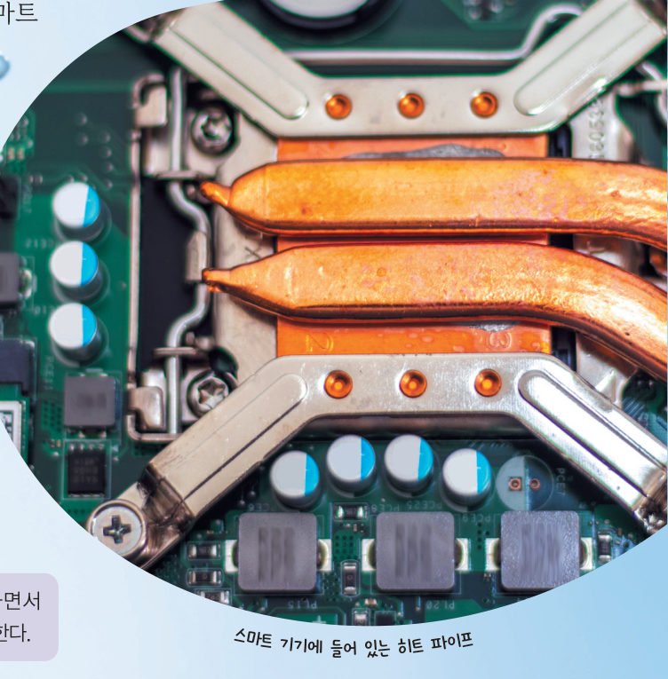
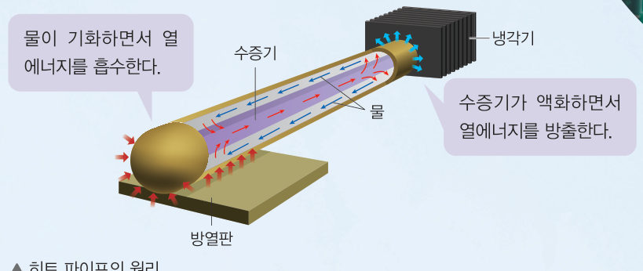

상태 변화 시
열에너지 출입 이용
“저기 산책로에서 물이 나오는데?” 무더운 여름철, 안개처럼 물을 뿌려 주는 장치 주변이 시원한 까닭은 무엇일까? 가상 항아리 냉장고와 에어컨으로 상태 변화 시 열에너지 출입을 생활에 어떻게 이용하는지 알아보자.
물질은 상태가 변할 때 열에너지를 흡수하거나 방출한다. 물질이 주변에서 열에너지를 흡수하면 주변은 온도가 낮아지고, 물질이 주변으로 열에너지를 방출하면 주변은 온도가 높아진다.


• 드라이아이스: → 열에너지
• 과일 창고의 물통: → 열에너지
물질의 상태가 변할 때 열에너지 출입은 우리 생활에서 다양하게 적용된다. 손가락이나 손목을 다쳤을 때 그림 4-12와 같이 액체 ●파라핀을 이용할 수 있다. 액체 파라핀에 손을 담갔다가 꺼내면 액체 파라핀이 고체 파라핀으로 응고하는 동안 열에너지를 방출하기 때문에 손이 따뜻해진다.

더운 여름철에 사용하는 에어컨은 그림 4-13과 같이 ●냉매의 상태 변화 시 열에너지 출입을 이용하여 실내 온도를 조절한다. 에어컨을 작동하면 액체 냉매가 기화하면서 주변에서 열에너지를 흡수하기 때문에 실내가 시원해진다. 최근에 사용하는 냉난방 에어컨은 실외기와 실내기의 역할을 간단하게 바꿀 수 있어 냉난방 기능을 모두 사용할 수 있다.
●파라핀: 석유에서 얻을 수 있는 밀랍 형태의 반투명한 고체 물질 · ●냉매: 에어컨이나 냉장고에 이용하는 물질로, 액체에서 기체로, 기체에서 액체로 상태가 반복적으로 변하면서 열에너지를 흡수하거나 방출한다.


- 자료 수집 물질의 상태 변화 시 열에너지 출입을 이용한 예와 그 원리를 모둠별로 조사한다.
- 과정 1에서 조사한 예를 하나 선택하여 그 원리를 이용한 물품을 제작할 수 있는 계획서를 작성한다.
- 작성한 물품 제작 계획서를 발표한다.


스마트 기기에서 발생하는 열을 방출하기 위한 장치로 히트 파이프를 사용하기도 한다. 구리관 속에 소량의 물이 들어 있는 구리–물 히트 파이프는 물의 상태 변화 시 열에너지 출입을 이용해 주요 부품의 온도를 낮춰 스마트 기기를 안전하게 사용할 수 있게 한다.
스마트 기기가 작동하면서 열이 발생하면 히트 파이프 내부에 들어 있던 물이 열에너지를 흡수하여 수증기로 변한다. 이때 생성된 수증기는 관을 타고 히트 파이프의 반대쪽으로 이동한다. 냉각기로 이동한 수증기는 열에너지를 방출하면서 물로 변하고 다시 방열판으로 이동한다. 이처럼 히트 파이프의 양끝에서 두 가지 상태 변화가 일어나면서 열에너지가 빠르게 출입해 과열을 방지할 수 있다.

| ① 물질은 상태가 변할 때 열에너지가 출입한다. | |
| ② 물질이 열에너지를 방출하면 주변의 온도가 낮아진다. | |
| ③ 아이스크림 포장 용기 속에 드라이아이스를 함께 넣으면 드라이아이스가 열에너지를 흡수하기 때문에 아이스크림이 녹지 않는다. | |
| ④ 액체 파라핀이 고체 파라핀으로 변하는 동안 열에너지를 흡수하기 때문에 손이 따뜻해진다. |
에어컨은 액체 냉매가 하면서 열에너지를 함으로써 공기를 시원하게 한다. 추운 겨울 과일 창고의 물통은 물이 얼음으로 하면서 열에너지를 하므로 과일의 냉해를 막는다.
2상태 변화 시 열에너지 출입 이용
(2) 열에너지를 하는 상태 변화: 응고, 액화, 기체에서 고체로의 승화
(3) 열에너지를 흡수하는 상태 변화가 일어날 때 주변은 온도가 , 열에너지를 방출하는 상태 변화가 일어날 때 주변은 온도가 .
(4) 물질의 상태 변화 시 열에너지 출입을 이용한 예: 액체 파라핀, 에어컨
항아리 냉장고는 ① 젖은 흙의 물이 증발(기화)하고 수증기가 항아리의 작은 구멍으로 확산해 나가며(첫 번째 블록), ② 이때 액체인 물이 기체인 수증기로 상태 변화하고(두 번째 블록), ③ 기화하면서 항아리 안의 열에너지를 흡수해 온도를 낮춘다(세 번째 블록). 전기 없이도 채소와 과일을 시원하게 보관하는 조상의 지혜이다.